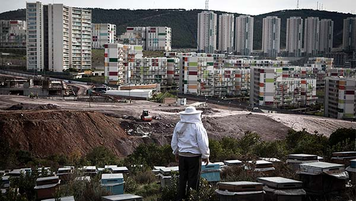
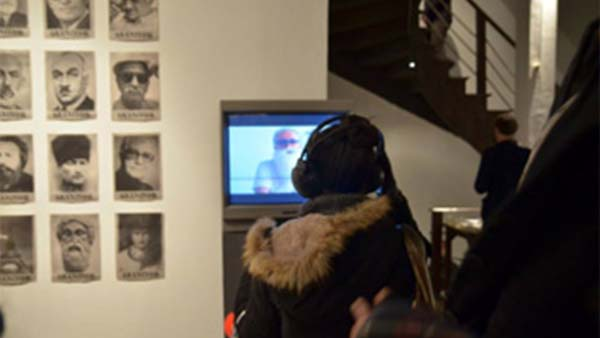

Home To the Spoken Word.
On Voice Republic you will find well-founded discussions and relevant presentations on topics that you are interested in. A wide range of professional content from the fields of art and culture, politics and society, the media, science, economics and technology is available for free – either live or in the audio archive.
Listen Now
In the Voice Republic Archive you can listen to professional audio content from different areas: politics, culture, sciences and economy.
Published 3 days ago by
nGbK
Sozialer Wandel und Politische Kunst in der Südosttürkei
Sprecher/In: Patrick Frank
Published 3 days ago by
nGbK
Independent Cultural Spaces in Turkey and Germany
Sprecher/In: Patrick Frank
Published 2 months ago by
re:publica15
Watching the Watchers: Building a Sousveillance State
Sprecher/In: Patrick Frank
Published 4 months ago by
AMAZE Berlin

A MAZE Masterclass: Rami Ismail in conversation with Leigh Alexander
Sprecher/In: Patrick Frank

Published 3 days ago by
HPI School of Design Thinking

Visual Diagnostics for Design Thinking Teams
Sprecher/In: Patrick Frank
"Could I have some education to go, please?"
Did you miss an event you were really interested in? No problem. Each streamed live Talk will be in our audio archive right after the event. There you can listen to it at any time. Embed the Voice Republic Player into your web page or share the content on social networks, to make others aware of it.
All talks are also available as a podcast – listen to them anywhere, whenever you want!
Take part in the action—no matter where you are.
Conferences, meetings and lectures are held all over the world and you can't always be there in person. That doesn’t mean you have to miss the event. At Voice Republic you can listen to the Talks that interest via live stream. Use the comment section to actively participate in the discussion and ask questions.